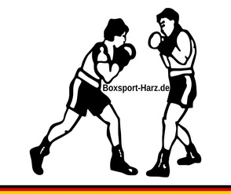

Die Gewichtsklassen des DBV (gültig ab 01.01.2025)
Männer und männliche Jugend (U19):
Fliegengewicht (M50kg): über 47,0 bis 50,0 kg (10 Unzen)
Bantamgewicht (M55kg): über 50,0 bis 55,0 kg (10 Unzen)
Leichtgewicht (M60kg): über 55,0 bis 60,0 kg (10 Unzen)
Weltergewicht (M65kg): über 60,0 bis 65,0 kg (10 Unzen)
Halbmittelgewicht (M70kg): über 65,0 bis 70,0 kg (12 Unzen)
Mittelgewicht (M75kg): über 70,0 bis 75,0 kg (12 Unzen)
Halbschwergewicht (M80kg): über 75,0 bis 80,0 kg (12 Unzen)
Cruisergewicht (M85kg): über 80,0 bis 85,0 kg (12 Unzen)
Schwergewicht (M90kg): über 85,0 bis 90,0 kg (12 Unzen)
Superschwergewicht (M90+kg): über 90,0 kg (12 Unzen)
Frauen und weibliche Jugend (U19):
Halbfliegengewicht (W48kg): über 45,0 bis 48,0 kg (10 Unzen)
Fliegengewicht (W51kg): über 48,0 bis 51,0 kg (10 Unzen)
Bantamgewicht (W54kg): über 51,0 bis 54,0 kg (10 Unzen)
Federgewicht (W57kg): über 54,0 bis 57,0 kg (10 Unzen)
Leichtgewicht (W60kg): über 57,0 bis 60,0 kg (10 Unzen)
Weltergewicht (W65kg): über 60,0 bis 65,0 kg (10 Unzen)
Halbmittelgewicht (W70kg): über 65,0 bis 70,0 kg (12 Unzen)
Mittelgewicht (W75kg): über 70,0 bis 75,0 kg (12 Unzen)
Halbschwergewicht (W80kg): über 75,0 bis 80,0 kg (12 Unzen)
Schwergewicht (W80+kg): über 80,0 kg (12 Unzen)
Junioren und Juniorinnen (U17):
Papiergewicht (42 kg): über 40,0 bis 42,0 kg (10 Unzen)
Papiergewicht (44 kg): über 42,0 bis 44,0 kg (10 Unzen)
Papiergewicht (46 kg): über 44,0 bis 46,0 kg (10 Unzen)
Halbfliegengewicht (48 kg): über 46,0 bis 48,0 kg (10 Unzen)
Fliegengewicht (50 kg): über 48,0 bis 50,0 kg (10 Unzen)
Halbbantamgewicht (52 kg): über 50,0 bis 52,0 kg (10 Unzen)
Bantamgewicht (54 kg): über 52,0 bis 54,0 kg (10 Unzen)
Federgewicht (57 kg): über 54,0 bis 57,0 kg (10 Unzen)
Leichtgewicht (60 kg): über 57,0 bis 60,0 kg (10 Unzen)
Halbweltergewicht (63 kg): über 60,0 bis 63,0 kg (10 Unzen)
Weltergewicht (66 kg): über 63,0 bis 66,0 kg (10 Unzen)
Halbmittelgewicht (70 kg): über 66,0 bis 70,0 kg (12 Unzen)
Mittelgewicht (75 kg): über 70,0 bis 75,0 kg (12 Unzen)
Halbschwergewicht (80 kg): über 75,0 bis 80,0 kg (12 Unzen)
Schwergewicht (80+ kg): über 80,0 kg (12 Unzen)
Kadetten (U15) und Schüler (U13), männlich und weiblich:
Papiergewicht (40 kg): über 38,0 bis 40,0 kg (10 Unzen)
Papiergewicht (42 kg): über 40,0 bis 42,0 kg (10 Unzen)
Papiergewicht (44 kg): über 42,0 bis 44,0 kg (10 Unzen)
Papiergewicht (46 kg): über 44,0 bis 46,0 kg (10 Unzen)
Halbfliegengewicht (48 kg): über 46,0 bis 48,0 kg (10 Unzen)
Fliegengewicht (50 kg): über 48,0 bis 50,0 kg (10 Unzen)
Halbbantamgewicht (52 kg): über 50,0 bis 52,0 kg (10 Unzen)
Bantamgewicht (54 kg): über 52,0 bis 54,0 kg (10 Unzen)
Federgewicht (57 kg): über 54,0 bis 57,0 kg (10 Unzen)
Leichtgewicht (60 kg): über 57,0 bis 60,0 kg (10 Unzen)
Halbweltergewicht (63 kg): über 60,0 bis 63,0 kg (10 Unzen)
Weltergewicht (66 kg): über 63,0 bis 66,0 kg (10 Unzen)
Halbmittelgewicht (70 kg): über 66,0 bis 70,0 kg (12 Unzen)
Mittelgewicht (75 kg): über 70,0 bis 75,0 kg (12 Unzen)
Halbschwergewicht (80 kg): über 75,0 bis 80,0 kg (12 Unzen)
Schwergewicht (80+ kg): über 80,0 kg (12 Unzen)
In Klammern: vorgeschriebenes Handschuhgewicht. Ab dem Halbmittelgewicht boxen beide Sportler mit 12-Unzen-Handschuhen, auch wenn nur einer von beiden dieser oder einer schwereren Klasse angehört. In U13, U15 und U17 können Ausschreibungen unterhalb der untersten Klasse weitere Papiergewichtsklassen in 2-kg-Schritten vorsehen.
Quelle: Gewichtsklassen des DBV (boxverband.de)
